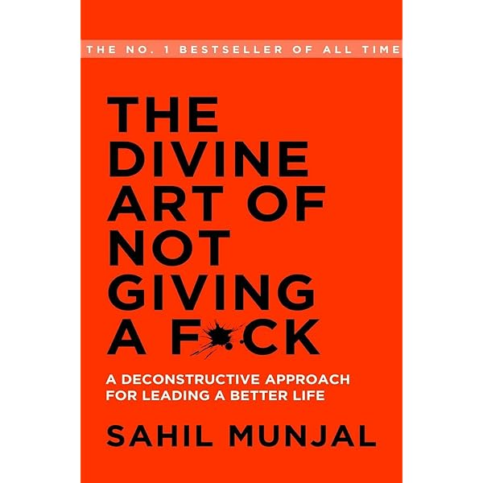

Beparvolikning nozik san’ati
Mark Menson bu kitobda aytmoqchi bo’lgan gapi “Hamma narsagaym siqilaverish kerak emas”, yani odam o’zi uchun qadrli bolgan narsalarni topib, boshqa narsalarga siqilmasligi kerak. Qadrli narsa nima, yoki qadriyat nima? Qadriyat - bu birinch o’rinda gap emas harakat. Nimadur sizning qadriyatingiz ekanligin aytishingiz mumkin, ammo bu narsani qilmasligingiz mumkin, misol uchun siz aytasiz “Sen mening eng qadrli do’stimsan”, ammo u sizdan pul, yordam yoki vaqtingizni so’raganida unga yordam bermaysiz, demak bu odam siz uchun qadrli emas. Ikkita narsa to’qnash keldi, qaysibirini tanlasangiz u sizga qadrliroq bo’ladi, masalan: ikkita do’stingiz sizga bir vaqtda yozdi, qaysibiriga birinchi javob bersangiz o’sha do’stingiz siz uchun qadrliroq. Demak qadriyat siz u uchun sarflayotdan vaqtingizda o’lchanar ekan. Yana o’z qadriyatingiz uchun boshqa bir narsani qurbon qilisangiz yoki o’zingiz qiyinchilik ko’rsangiz bu haqiqatan siz uchun qadrli bo’lgan narsa ekan. Misol uchun oylamni ta’minlash mening qadriyatim deb aytasiz va bu uchun chet elda ishlab, dam olmasdan, kechayu kunduz ishlaysiz. Bu qiyinchilikmi? Albatta, chunki siz oilangizni ta’minlash uchun o’z hayotingizni qurbol qilyapsiz. Mening fikrimcha odamning eng katta qadriyati - bu sog’liq bo’lishi kerak. Chunki sog’ bolsangiz siz oilangizga, ota-onangizga va do’stlaringizga g’amho’rlik qila olasiz.
Qadriyatlar o’zi ko’p bo’lmaydi, tahminan 5-6 ta. Kitobda aytilishi bo’yicha “Shu qardiyatlaringiz dan tashqari narsalarga beparvo bo’ling”. Masalan: qaysidur davlatda janjal bo’yapti, qaraysiz - bu janjal menga yoki mening qadriyatlarimga ta’siri bormi yoki yo’q, bo’lmasa men beparvoman.
Hamma qadriyatlar haqida gapiradi, ammo qanday qilib bu qadriyatlarni hayotga tadbiq qilish va ularga muvofiq yashash mumkun? Nimadur qilishingiz uchun sizga motivatsiya kerak. Masalan siz bir ishga kirdingiz va maqsadingiz qo’shimcha daromad topish (motivatsiya bor). Demak oldin motivatsiya kegin harakat. Buning teskarisi ham bo’ladi, oldin harakat qilamiz kegin motivatsiya keladi. Yani, siz ishga o’zingizni majburlab kelsangiz (harakat bor) va keginroq natijani ko’rsangiz sizda motivatsiya uyg’onadi.
Epiktetning gapi bor “Bir hodisa sodir bo’ldi. Men bu ishni o’zgartira olamanmi ? “ha” bo’lsa men uni o’zgartiraman, “yo’q” bo’lsa o’zimi o’zgartiraman”. Misol uchun qo’shningiz sizni daromad bo’yicha o’zib ketdi, siz bunga ta’sir qila olmaysiz. Siz ta’sir qila oladigan narsalar - bu o’zimizning fokusimizni, harakatlarimizni va yondashuvimizni.
Har bir inson qiynaladi. Ko’p puli borlar ham, barcha narsasi borlar ham qiynaladi. Va inson o’zi uchun nima uchun qiynalishini tanlashi mumkun: oilangiz, do’stingiz, diningiz, millatingiz uchunmi? Tanlamasangiz shunchaki qiynalasiz.